class: title-slide count: false .logo-title[] ## ELECTENG 311 # Electronics Systems Design ### Voltage Feedback Design .TitleAuthor[Duleepa J Thrimawithana] --- layout: true name: template_slide .logo-slide[] .footer[[Duleepa J Thrimawithana](https://www.linkedin.com/in/duleepajt), Department of Electrical, Computer and Software Engineering (2022)] --- name: S1 # Learning Objectives - How do we communicate voltage feedback with the UC3843? - Electrically isolated voltage feedback - Why do we use PWM to communicate voltage feedback? - Required functionality of our firmware - Why do we intend to use an ATmege328P/ATmega328PB? - Fundamentals of PWM generation - Asymmetric and symmetric PWM - PWM generation methods - Using an MCU to generate PWM - Timers and how they work - Generation PWM using a timer peripheral - Learning to configure PWM in the ATmega328P - Learning to develop code to generate a PWM output using the ATmega328P --- class: title-slide layout: false count: false .logo-title[] # Isolated Voltage Feedback ### Implementation Options --- layout: true name: template_slide .logo-slide[] .footer[[Duleepa J Thrimawithana](https://www.linkedin.com/in/duleepajt), Department of Electrical, Computer and Software Engineering (2021)] --- name: S2 # Voltage Feedback .left-column-50[ 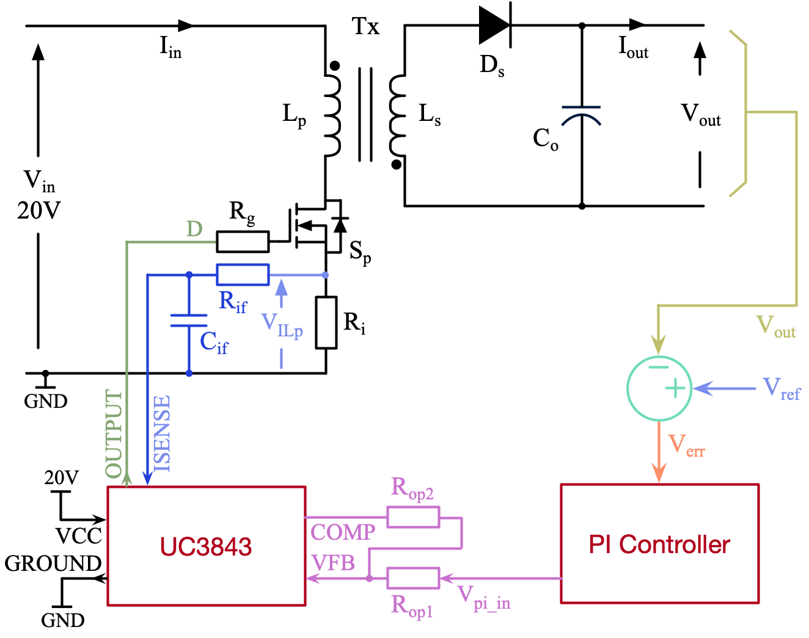 ] .right-column-50[ - UC3843 needs to be provided a voltage signal, V<sub>pi_in</sub>, between 1V and 4V from a PI controller - For the R<sub>op1</sub> and R<sub>op2</sub> values we selected, - A V<sub>pi_in</sub> of 1V indicate the UC3843 to allow maximum I<sub>Lp(pk)</sub> - A V<sub>pi_in</sub> of 4V indicate the UC3843 to limit I<sub>Lp(pk)</sub> to almost 0A - PI controller needs to be fed the error voltage, V<sub>err</sub> - V<sub>err</sub> is derived by comparing the actual output voltage, V<sub>out</sub>, with a reference voltage, V<sub>ref</sub> - V<sub>ref</sub> indicates the target output voltage we want to generate ] --- name: S3 # Isolation of Feedback .left-column-50[ 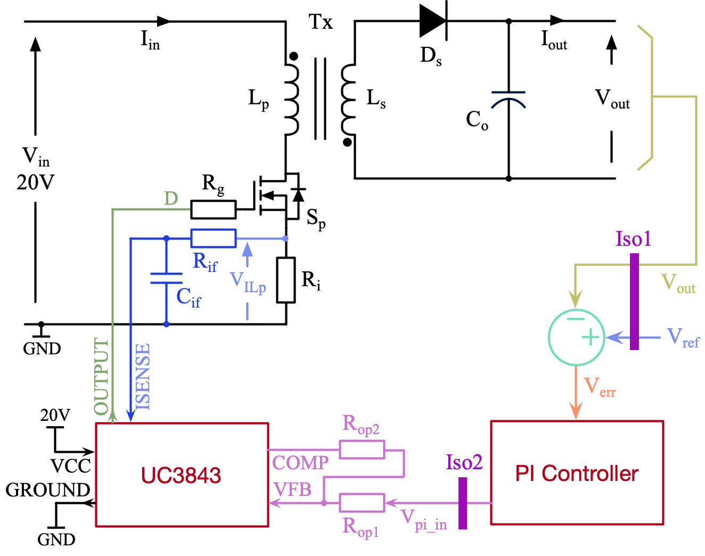 ] .right-column-50[ - Specifications state V<sub>out</sub> needs to be electrically isolated from V<sub>in</sub> - Though Tx isolates V<sub>out</sub> from V<sub>in</sub> there exists a non-isolated path through feedback - The feedback loop need to be electrically isolated to solve this issue - We should determine the most suitable point in the feedback path to isolate - We can isolate V<sub>out</sub> and V<sub>ref</sub> signals at "Iso1" or V<sub>pi_in</sub> signal "Iso2" - "Iso2" preferred as one signal and future proof - Why not isolate after the UC3843? ] --- name: S4 # Analog Signal Isolation .center[ 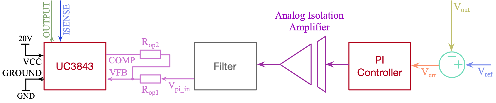 ] - The output of the PI controller can be an analog voltage if the it is implemented using analog circuitry - For our design it will be in the range 1V to 4V - An analog isolation amplifier IC (e.g., [ADuM3190s](https://www.analog.com/en/products/adum3190s.html#product-overview)) can be used for isolation - Tend to be expensive as analog isolation requires complex circuitry - A low pass filter is usually needed to obtain a clean signal that can be used as V<sub>pi_in</sub> - Not a good solution if the PI controller is implemented using a microcontroller since DACs are not a common peripheral found in cheaper microcontrollers --- name: S5 # Digital Signal Isolation .center[ 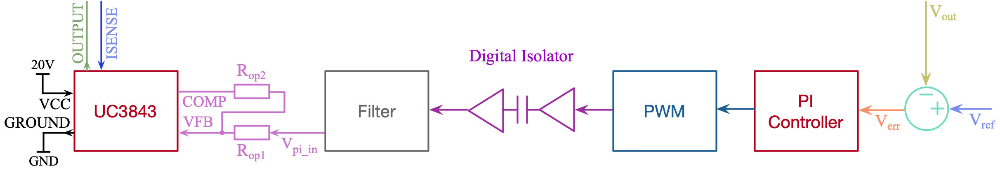 ] - The output of the PI controller can be a digital signal if it is implemented using a microcontroller - For example, it can be a pulse width modulated (PWM) signal, which has an average value representative of the PI controller output (i.e., 1V to 4V) - Alternatively, it can be also a pulse frequency modulated signal (PFM) - A digital isolator IC (e.g., [ADuM110N](https://www.analog.com/en/products/adum110n.html)) can be used for isolation - Tend to be cheaper than analog isolation amplifiers - Can be also implemented with discrete devices using an IR LED and a detector - A low pass filter is needed to obtain a clean signal that can be used as V<sub>pi_in</sub> --- name: S6 # PI Controller Implementation .center[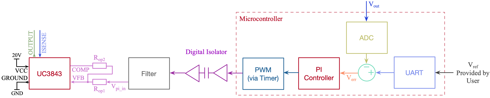] - The PI controller can be implemented digitally on a microcontroller - The PI output could set the duty-cycle of a PWM output generated by the microcontroller - Most microcontrollers have built in timer peripherals and they support PWM generation - The output voltage, V<sub>out</sub>, can be read using an ADC to compare with a reference voltage, V<sub>ref</sub> - Most microcontrollers have at least a single built in ADC peripheral - V<sub>ref</sub>, is provided by the user via a computer that communicates with the microcontroller over UART - Most microcontrollers have at least a single built in UART peripheral --- name: S7 # Why a Digital PI? .center[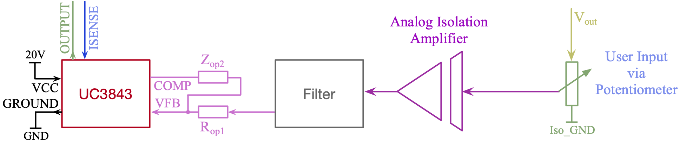] - We can implement a PI controller using only analog hardware - This is a solution commonly employed in many commercial products - The cost and complexity of the hardware depends on expected functionality - As in example above a simple implementation may be used with a volt meter as the display and Z<sub>op2</sub> to implement a compensator - Adding a user interface can significantly complicate the design and often require a microcontroller - Difficult and costly to modifying the system to add new functionality - Since the design aim to provide a graphical user interface, a digital implementation of the PI controller likely to be the best solution --- name: S8 # Firmware Functionality - Configure the Digital I/O, ADC, UART and Timer peripherals with appropriate settings for the project - In the background, listen to messages received via UART to get reference voltage, **V_ref**, sent by the user - Use a message format, similar to "XXXXX\r\n" where XXXXX is **V_ref** in mV - Use '\r' and/or '\n' to identify end of the message and convert the ASCII characters to a number - Take ADC measurements of the output voltage, **V_out**, that is stepped down using a voltage divider - Aim to take ADC samples every 0.1ms or faster (can be auto-triggered based on a timer) - Implement a PI controller that computes the PI output, **PI_out**, after each **V_out** measurement - First subtract **V_ref** from each measurement of **V_out** to obtain the error voltage, **V_err** - Multiply **V_err** with selected K<sub>i</sub> and add to accumulated integral error, **V_int_err** - Multiply **V_err** with selected K<sub>p</sub> and add to **V_int_err** to obtain **PI_out** - Implement anti-windup to avoid overflow of **V_int_err** and **PI_out** - Setup a timer to generate a PWM that has a duty-cycle, **D_pwm**, representative of **PI_out** - Aim for a PWM frequency of 100kHz and use scaling to match **PI_out** to **D_pwm** range --- name: S9 # What to Consider when Selecting an MCU (PI)? - There are three core resources which must be considered when selecting an MCU for our project - Computational Power - Program Memory - RAM - Computational Power - This is a measure of how quickly the processor can perform a given task - The more computation you need to perform in a given time, the more computational power you need - It is a function of clock speed (how quickly an instruction is executed), and the Instruction Set Architecture (how much computation is performed by a given instruction) - Different architectures target different levels of computational performance - ATmega 328P vs ARM Cortex-M4 vs C2000 TMS320F28379 - Measured in Millions-of-Instructions-Per-Second (MIPS), but this is only a guide - ATmega 16 MIPS of 328P vs 90 MIPS of STM32F334 vs 800 MIPS of C2000 TMS320F28379 --- name: S10 # What to Consider when Selecting an MCU (PII)? - Program Memory (Flash) - This is where your code to execute is stored - More tasks your program performs, the more code you will require, and the more flash you will need - For microcontrollers it is usually measured in kilobytes (KB), or megabytes (MB) (e.g. an ATmega328P has 32KB of program memory) - Random Access Memory (RAM) - This is where data being processed by the microprocessor is stored, as well as the current microprocessor state - The more data you need to store or operate on at a given time, the more RAM you will require - For microcontrollers it is usually measured in kilobytes (KB), or megabytes (MB) (e.g. an ATmega328P has 2048B of RAM) - Different designs require a different mix of computational power, program memory, and RAM - Our design task is simple, and our resource requirements are limited --- name: S11 # What MCU I/O Peripherals are Important? - Microcontrollers come with a wide range of I/O peripheral to perform different tasks - The most common ones, which we will need for this project, are - General Purpose Input Output (GPIO) - Universal Asynchronous Receiver Transmitter (UART) - Analog to Digital Converter (ADC) - Timer - In COMPSYS 201 and in ELECTENG/COMPSYS 209 you learnt how to use these peripherals - There are many more I/O peripherals that we won’t need but can be important for more complicated projects and these include - Communication peripheral such as I2C, SPI, CAN, USB, and Ethernet - Digital to Analog Converter (DAC) - UI peripheral such as LCD drivers, capacitive touch and audio encoders - AES encryption, brown out protection, watchdog timers and low voltage detection --- name: S12 # Other Important Requirements - A number of other functional and non-functional requirements should be consider to select a MCU - Power consumption - Operating voltage range - Operating temperature range - Packages available (the size and shape of the actual chip) - Compiler support - Development tools required - Programming tools required - Available software libraries - Certifications (automotive, aerospace and military are common ones) - Cost, availability, lead-time and minimum-order-quantity (MoQ) typically are the most important - Cost should include cost of the devices themselves, licenses for tools, software and libraries as well as cost of learning and setting up a new ecosystem --- name: S13 # Why an ATmega328P/ATmega328PB? - To select an appropriate microcontroller for our project we need to estimate the requirements to implement the functionality we already discussed - Determining for example the required I/O peripherals and electrical parameters are somewhat straightforward - Memory and computational power requirements for example are harder to estimate and often our experience with similar previous projects is needed to do make a good estimate - As discussed previously there are many non-functional aspects to think about - Cost, availability and support (e.g. application notes, tutorials, books, development tools, libraries, etc.) are very important - In many situations we may prefer a familiar device or a device that is easier to use and has a shorter learning curve since development time is a big part of the project cost - The ATmega328P/ATmega328PB has all the peripherals we need and has sufficient memory and computational power but also more importantly it is one of the easiest to use, we are familiar with it and there is ample support (e.g. https://community.atmel.com) --- name: S14 # What Other MCUs Can We Use? - The STMicroelectronics STM32 and Texas Instruments C2000 family MCUs are quite popular in power electronics applications <table class="tg" style="undefined;table-layout: fixed; width: 1000px; margin-left:auto; margin-right:auto;"> <colgroup> <col style="width: 250px"> <col style="width: 250px"> <col style="width: 250px"> <col style="width: 250px"> </colgroup> <thead> <tr> <th class="tg-dzaw"><span style="color:white">Feature</span></th> <th class="tg-dzaw"><span style="color:white">ATmeag328P</span></th> <th class="tg-dzaw"><span style="color:white">STM32F334</span></th> <th class="tg-dzaw"><span style="color:white">TMS320F28379</span></th> </tr> </thead> <tbody> <tr> <td class="tg-sabo">Core</td> <td class="tg-sabo">8-bit CPU</td> <td class="tg-sabo">ARM M4 32-bit CPU with FPU</td> <td class="tg-sabo">Dual 32-bit CPUs with FPU</td> </tr> <tr> <td class="tg-ig71">Clock Frequency & MIPS</td> <td class="tg-ig71">16MHz & 16 MIPS</td> <td class="tg-ig71">72MHz & 90 MIPS</td> <td class="tg-ig71">200MHz & 800 MIPS</td> </tr> <tr> <td class="tg-sabo">Flash & RAM Sizes</td> <td class="tg-sabo">32KB & 2KB</td> <td class="tg-sabo">64KB & 12KB</td> <td class="tg-sabo">1024KB & 204KB</td> </tr> <tr> <td class="tg-ig71">Cost for 1k+ Qty</td> <td class="tg-ig71">~1.90 USD</td> <td class="tg-ig71">~3.40 USD</td> <td class="tg-ig71">~12.00 USD</td> </tr> <tr> <td class="tg-sabo">Number of ADC & Resolution</td> <td class="tg-sabo">Single 10-Bit ADC up to 15 KSPS</td> <td class="tg-sabo">Two 12-bit ADCs up to 5 MSPS</td> <td class="tg-sabo">Four 16-bit ADCs up to 3.5 MSPS</td> </tr> <tr> <td class="tg-ig71">Number of Timers</td> <td class="tg-ig71">3</td> <td class="tg-ig71">12</td> <td class="tg-ig71">24</td> </tr> <tr> <td class="tg-sabo">Number of USARTs</td> <td class="tg-sabo">1</td> <td class="tg-sabo">3</td> <td class="tg-sabo">4</td> </tr> <tr> <td class="tg-ig71">Operating Voltage Range</td> <td class="tg-ig71">2.7V to 5.5V</td> <td class="tg-ig71">2.0V to 3.6V</td> <td class="tg-ig71">1.2V Core and 3.3V I/O</td> </tr> <tr> <td class="tg-sabo">Other Useful Features</td> <td class="tg-sabo">None</td> <td class="tg-sabo">DACs, PGA, RTC, DMA </td> <td class="tg-sabo">DACs, DMA, CLA, CLB</td> </tr> <tr> <td class="tg-ig71">Learning Curve</td> <td class="tg-ig71">Easy</td> <td class="tg-ig71">Moderate</td> <td class="tg-ig71">Challenging</td> </tr> </tbody> </table> --- name: S15 # The ATmega328P MCU & Tools - The ATmega328P offers the following - 8-bit processor implementing the Atmel AVR RISC architecture - 16 MIPS throughput at 16MHz clock - 32 KB of program memory (flash) which is programmable in-system (the ability of microcontrollers to be programmed while installed in a complete system) - 2 KB of RAM - 3 timers, 8 channel 10-bit SAR type ADC, a USART, and 23 GPIO - External and internal interrupt sources - Operates from 2.7V to 5.5V from -40°C to 125°C - As with previous courses we will use the Atmel Studio IDE for development - When getting started, the most important resource available is the [ATmega328P](http://ww1.microchip.com/downloads/en/DeviceDoc/Atmel-7810-Automotive-Microcontrollers-ATmega328P_Datasheet.pdf) datasheet - Lists all of the parameters and explains how the I/O peripherals work and how to use them --- name: S16 # ATmega328P vs ATmega328PB - Proteus VSM, which we will use to simulate and debug modules of the embedded software program, only provide an ATmega328P model - However, we will use the ATmega328PB Xplained Mini evaluation kit in our prototype to avoid having to build additional circuitry - Fortunately, code written for the ATmega328P is forward compatible with ATmega328PB - Some inbuilt macros might need minor modifications so alway test your modules on an ATmega328PB Xplained Mini after validating it in Proteus VSM - The main differences between the ATmega328P and the ATmega328PB are - ATmega328PB has an additional USART module, SPI module and a TWI module - ATmega328PB has 2 additional Timer/Counters - ATmega328PB has additional IO pin functionalities - In the lectures we will only consider the ATmega328P - Some macros used in lecture examples might need changing before programing the Xplained Mini --- name: S17 # ATmega328P Block Diagram & Pinout .center[ 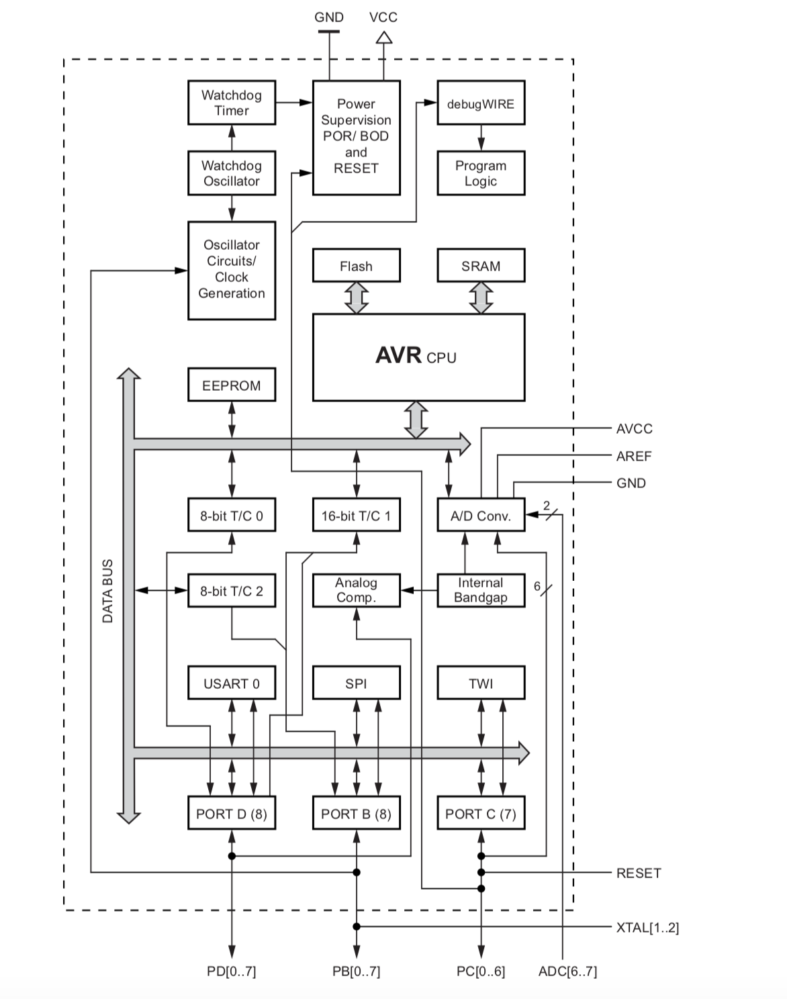 <img src="img/328PPins.png" height="450"> ] --- name: S18 # Recommended Implementation .center[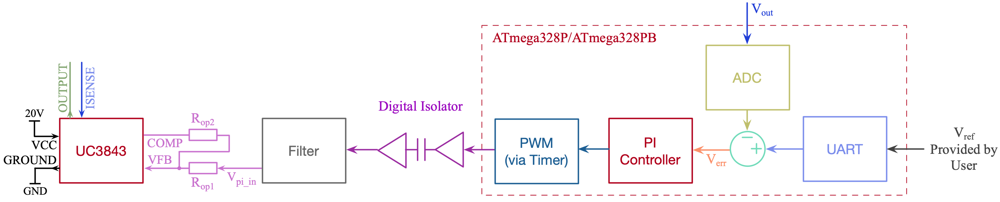] - The PI controller is implemented digitally on a ATmega328P/ATmega328PB - The PI output will set the duty-cycle of a PWM output generated by the ATmega328P/ATmega328PB - E.g., Use Timer0 and generate the output at OC0A pin - Measure the output voltage, V<sub>out</sub>, using ADC to compare with the user provided reference voltage - E.g., Use voltage divider to step-down V<sub>out</sub> to be in the range 0-5V for ADC0 channel - Reference voltage is provided by the user via a computer that communicates over UART - E.g., Configure USART0 to receive message at 9600 baud, 8N1 with no parity scheme --- class: title-slide layout: false count: false .logo-title[] # Pulse Width Modulation ### Fundamentals --- layout: true name: template_slide .logo-slide[] .footer[[Duleepa J Thrimawithana](https://www.linkedin.com/in/duleepajt), Department of Electrical, Computer and Software Engineering (2022)] --- name: S19 # What is a PWM Signal? .center[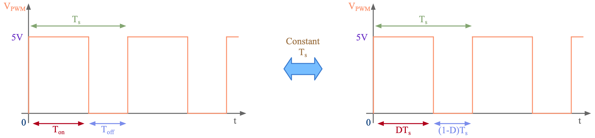] - Pulse width modulation (PWM) scheme produces a signal that has a constant time period, T<sub>s</sub>, but a variable on-time, T<sub>on</sub> - Note that `\(T_{s} = T_{on} + T_{off} \)` and thus varying T<sub>on</sub> has the opposite effect on T<sub>off</sub> since T<sub>s</sub> is constant - Often we use the duty-cycle, D, to quantify the duration of T<sub>on</sub> as a function of T<sub>s</sub> \\[ T\_{on} = D T\_{s} \quad \text{and} \quad T\_{off} = (1-D) T\_{s} \\] - A PWM signal can be generated using analogue circuitry or digitally using an MCU/DSP/FPGA --- name: S20 # Generating a PWM Signal .center[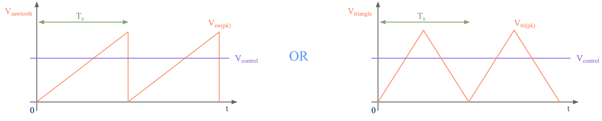] - A PWM signal is generated by comparing a control signal, V<sub>control</sub>, with either a sawtooth signal, V<sub>sawtooth</sub>, or a triangle wave signal, V<sub>triangle</sub> - V<sub>sawtooth</sub> or V<sub>triangle</sub> has a peak amplitude of V<sub>sw(pk)</sub> or V<sub>tri(pk)</sub>, respectively - As shown, V<sub>sawtooth</sub> or V<sub>triangle</sub> can start at 0 and go up to V<sub>sw(pk)</sub> or V<sub>tri(pk)</sub>, respectively - In this case, V<sub>control</sub> must be 0 to V<sub>sw(pk)</sub> or V<sub>tri(pk)</sub> - Alternatively, V<sub>sawtooth</sub> or V<sub>triangle</sub> can be from -V<sub>sw(pk)</sub> / 2 to V<sub>sw(pk)</sub> / 2 or -V<sub>tri(pk)</sub>/2 to V<sub>tri(pk)</sub>/2 --- name: S21 # PWM with a Sawtooth .left-column[ - This is the most common PWM generation scheme due to simplicity - Best for cases where V<sub>control</sub> is DC - PWM signal is generated by comparing V<sub>control</sub> with V<sub>sawtooth</sub> - V<sub>PWM</sub> is *high* (e.g., 5V) if V<sub>control</sub> > V<sub>sawtooth</sub> - V<sub>PWM</sub> is *low* (e.g., 0V) if V<sub>control</sub> < V<sub>sawtooth</sub> - Using trigonometry we can show that \\[ \frac {V\_{control}} {V\_{sw(pk)}} = \frac {T\_{on}} {T\_{s}} = D \\] - Therefore, by controlling V<sub>control</sub> between 0 and V<sub>sw(pk)</sub> we can set D between 0% to 100% ] .right-column[ .center[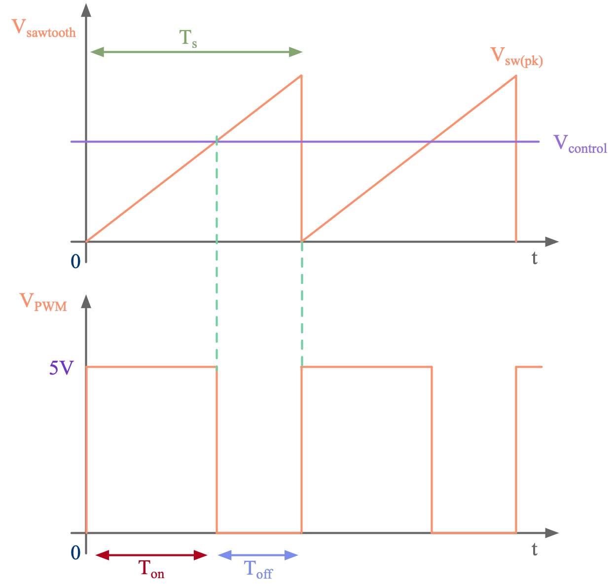] ] --- name: S22 # PWM with a Triangle .left-column[ - This PWM generation scheme is used when V<sub>control</sub> is time varying because the phase of V<sub>PWM</sub> doesn't change with V<sub>control</sub> - With sawtooth scheme, phase of V<sub>PWM</sub> change with V<sub>control</sub> - PWM signal is generated by comparing V<sub>control</sub> with V<sub>triangle</sub> - V<sub>PWM</sub> is *high* (e.g., 5V) if V<sub>control</sub> > V<sub>triangle</sub> - V<sub>PWM</sub> is *low* (e.g., 0V) if V<sub>control</sub> < V<sub>triangle</sub> - Using trigonometry we can show that \\[ \frac {V\_{control}} {V\_{tri(pk)}} = \frac {T\_{on}} {T\_{s}} = D \\] - Therefore, by controlling V<sub>control</sub> between 0 and V<sub>tri(pk)</sub> we can set D between 0% to 100% ] .right-column[ .center[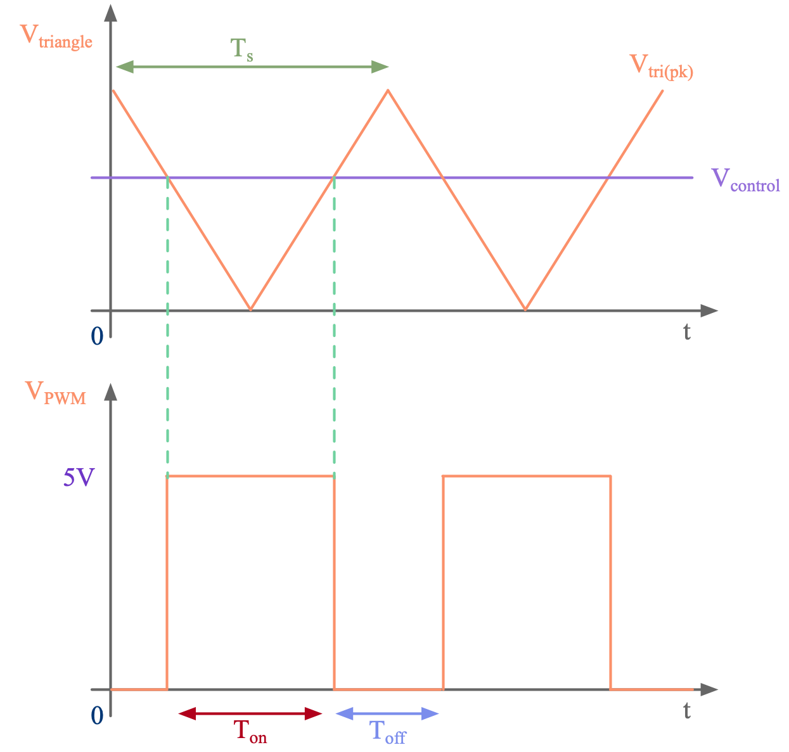] ] --- name: S23 # Analog PWM Generation .center[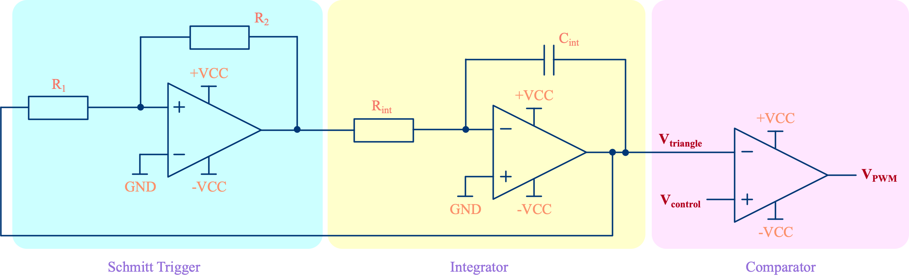] - A simple analog circuit can be used to generate a sawtooth or a triangle voltage waveform - This is typically achieved by charging a capacitor using a constant current source - A comparator is used to compare V<sub>control</sub> with V<sub>sawtooth</sub> or V<sub>triangle</sub> - The control voltage, V<sub>control</sub>, is applied to non-inverting terminal - Output of the comparator will be a PWM signal that has a D controlled via V<sub>control</sub> --- name: S24 # Digital PWM Generation .center[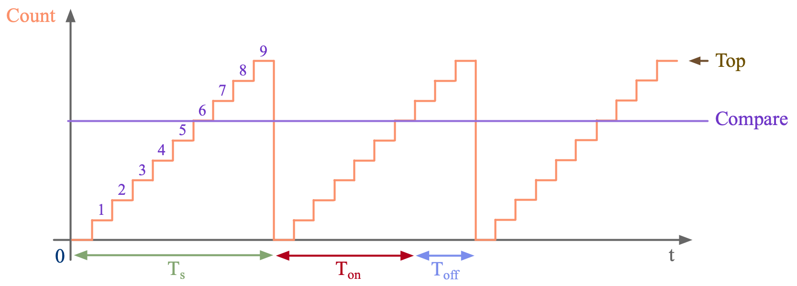] - A Timer Counter can be used to generate a digital sawtooth or a triangle waveform - An 'up' (or 'down') Counter generates a sawtooth while an 'up & down' Counter generates a triangle - A logical comparison between V<sub>control</sub> and the Timer Counter value is used to generate PWM output - Timer peripherals have dedicated hardware to compare the Counter value with a value loaded to a Output Compare registers - The Output Compare register holds the value of V<sub>control</sub> - Most Timer Counter peripherals have hardware to generate a PWM output based on this comparison --- name: S31 # An Example PWM Signal .center[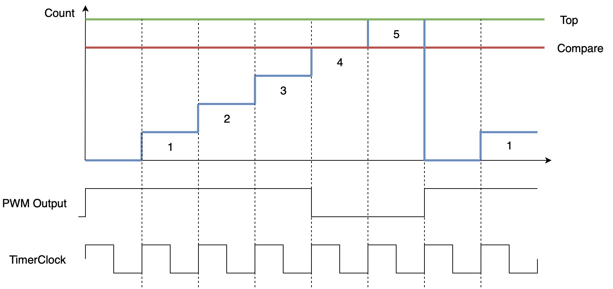] - As an example lets consider a counter that has the Top set to 5, and the compare value set to 3 - Assume the resolution of the counter is 10μs (i.e. f<sub>timer_clk</sub> is 100kHz) - In this example, T<sub>p</sub> will be 60μs and T<sub>on</sub> will be 40μs (i.e. D is 66.6%) because \\[ T\_{p} = \text{Resolution} \times \left( \text{Top} + 1 \right) \quad \text{&} \quad T\_{on} = \text{Resolution} \times \left( \text{Compare} + 1 \right) \\] --- class: title-slide layout: false count: false .logo-title[] # Timers ### Fundamentals --- layout: true name: template_slide .logo-slide[] .footer[[Duleepa J Thrimawithana](https://www.linkedin.com/in/duleepajt), Department of Electrical, Computer and Software Engineering (2022)] --- name: S25 # Operating Principles of a Timer Peripheral .center[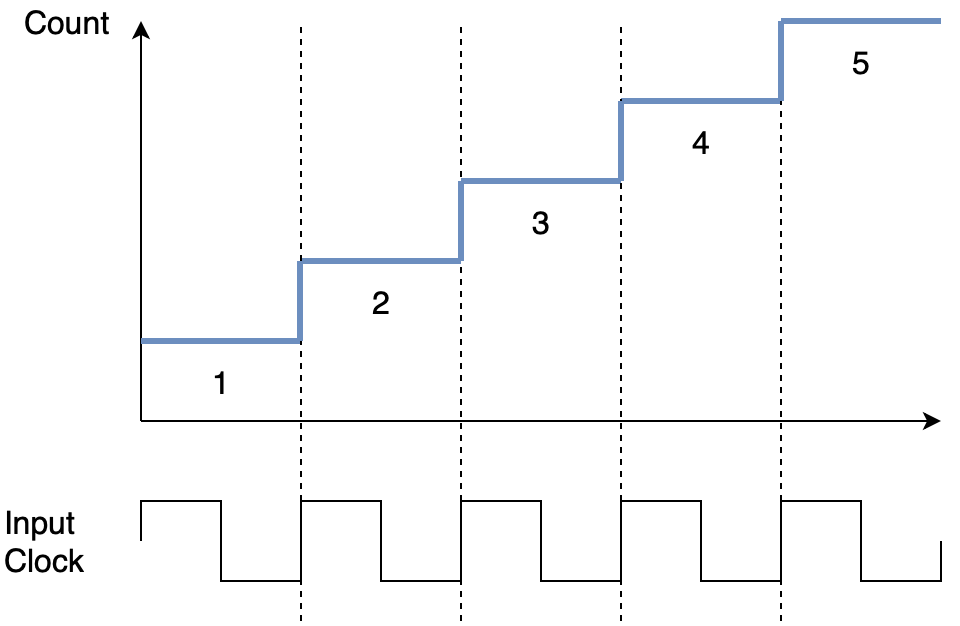] - A timer peripheral is implemented using a counter that counts up and/or down when its input changes - If counting up, the count is increased every time the input changes from low to high - If counting down, the count is decreased every time the input changes from low to high - This input is often derived from the system clock directly or through a prescaler --- name: S26 # Timing Using a Timer Peripheral .center[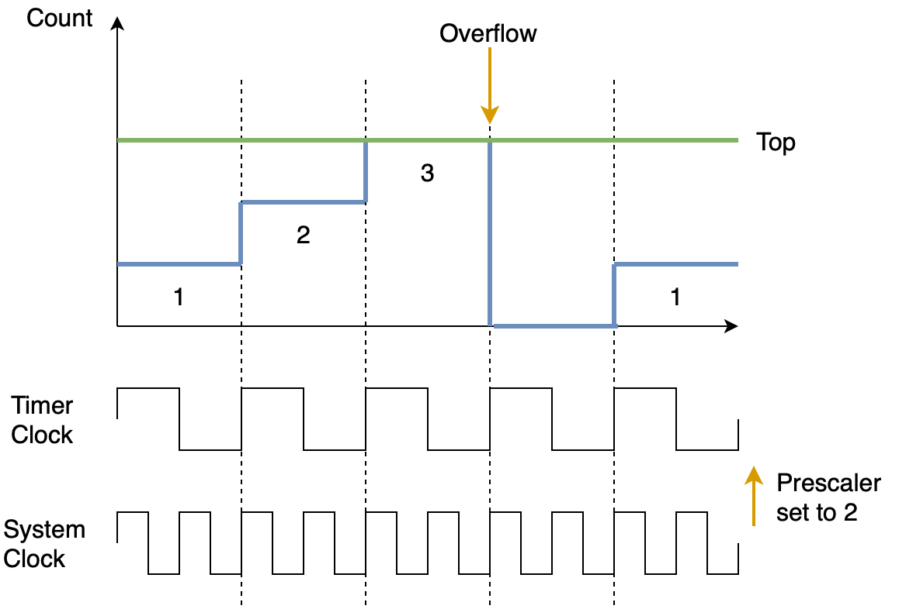] - If the counter size is 8-bits and it is counting up, it will reset to 0 at the next increment after 255 - Alternatively, the counter can be made to reset every time it reaches a specific count, referred to as **TOP**, and **TOP** should be less than largest number the counter can hold (referred to as the **MAX**) - The event generated when a counter resets, referred to as an **overflow**, can be used for precise timing - Either using polling or interrupts --- name: S27 # Using Compare Match for Timing .center[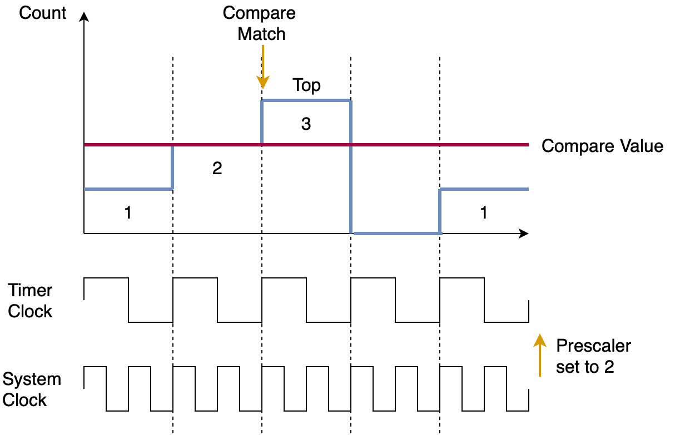] - A **compare** value can be used to detect when a set count value is reached - The event generated when a **compare match** occurs can be used for precise timing - Either using polling or interrupts - Overflow and compare match events are typically used to generate PWM signals - The **TOP** value usually sets T<sub>s</sub> while the **compare** value determines D --- name: S28 # Characteristics of a Timer (PI) - Prescaler - The clock divider which divides the system clock to create the timer clock \\[ f\_{timer\\\_clk} = \frac{f\_{system\\_clk}}{\text{Prescaler}} \\] - Bits - The number of bits allocated to the count register \\[ 0 \leqslant \text{count} < 2^{bits} \\] - Resolution - This is the minimum time interval the timer can measure and is equal to one timer clock period \\[ \text{Resolution} = \frac{1}{f\_{timer\\_clk}} \\] --- name: S29 # Characteristics of a Timer (PII) - Range - This is the maximum time interval the timer can measure \\[ \text{Range} = \text{Resolution} \times \left( 2^{bits} - 1 \right) \\] - Top - The count value at which the count is reset - Top must be less than or equal to the maximum possible count value which can be stored with the available bits - Period - The time interval taken for the count to return to the starting value - As the transition from top to ‘0’ takes one cycle, we must add 1 to the top to calculate the period \\[ \text{Period} = \text{Resolution} \times \left( \text{Top} + 1 \right) \\] --- name: S30 # Example: ATmega328P 8-Bit Timer .questions[ An ATmega328P uses a 16MHz system clock. Assume you plan to use one of the 8-bit timer peripherals in the ATmega328P. You have decided to use a prescaler of 4. - What is the resolution you can achieve? - What is the range you can achieve? - What should be used as the top value to get a period of 50μs? ] --- name: S31 # Example: PWM with Timer Peripheral .questions[ An ATmega328P uses a 16MHz system clock. In an embedded program you were developing, a 100kHz PWM needed to be generated and you decided that an option is to use the 8-bit Timer 0 peripheral. - If you plan to use a presacaler of 1 for Timer 0 what should be the **Top** value? - If you plan to use a presacaler of 8 for Timer 0 what should be the **Top** value? - Which one of the above 2 options would help you achieve a better duty-cycle resolution? - Assume you decided to use a prescaler of 1. What should be the value laded to the **Compare** register to generate approximately a 50% duty-cycle? ] --- class: title-slide layout: false count: false .logo-title[] # The Timers on ATmega328P ### Configuring and Using for PWM Generation --- layout: true name: template_slide .logo-slide[] .footer[[Duleepa J Thrimawithana](https://www.linkedin.com/in/duleepajt), Department of Electrical, Computer and Software Engineering (2022)] --- name: S32 # ATmega328P Timer Peripherals - The ATmega328P has 3 timer peripherals - 8-bit Timer/Counter0 (TC0) - 16-bit Timer/Counter1 (TC1) - 8-bit Timer/Counter2 (TC2) with Asynchronous Operation - In this lecture we will focus only on Timer/Counter0 (TC0) - 8-bit resolution - Two compare units - PWM generation - Three independent interrupt sources - We will learn to use the timer to generate a PWM output - For the project you may use a different Timer peripheral - You may also decide to use more than 1 timer peripheral as you may have other tasks that need timing information --- name: S33 # ATmega328P TC0 Pins - In the ATmega328P there are 3 pins associated with TC0 - PD4 (T0) is used to provide an external clock source while PD5 (OC0B) and PD6 (OC0A) are used to generate PWM waveforms based on compare match events .center[<img src="img/328PPins.png" width="320">] --- name: S34 # ATmega328P TC0 Implementation .center[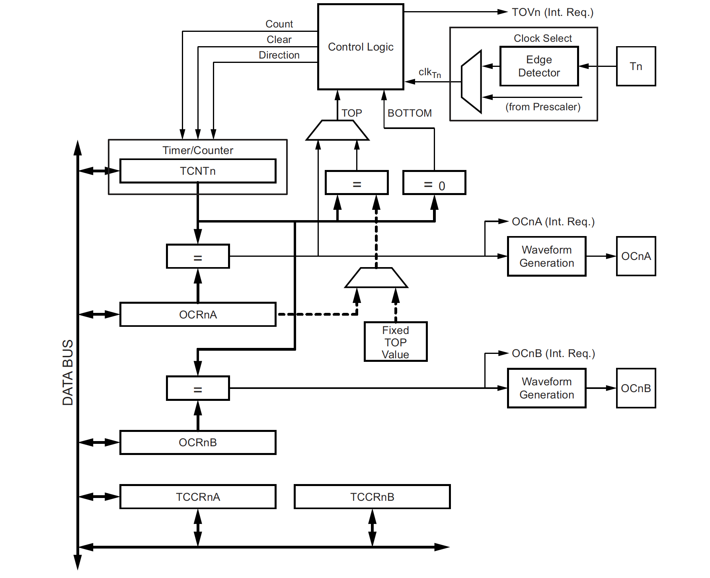] --- name: S35 # ATmega328P TC0 Registers - There are 7 registers associated with TC0 <table class="tg" style="undefined;table-layout: fixed; width: 600px; margin-left:auto; margin-right:auto;"> <colgroup> <col style="width: 200px"> <col style="width: 400px"> </colgroup> <thead> <tr> <th class="tg-dzaw"><span style="color:white">Register</span></th> <th class="tg-dzaw"><span style="color:white">Functionality</span></th> </tr> </thead> <tbody> <tr> <td class="tg-jayl">TCCR0A</td> <td class="tg-jayl">Timer/Counter Control Register A</td> </tr> <tr> <td class="tg-sabo">TCCR0B</td> <td class="tg-sabo">Timer/Counter Control Register B</td> </tr> <tr> <td class="tg-jayl">TCNT0</td> <td class="tg-jayl">Timer/Counter Register</td> </tr> <tr> <td class="tg-sabo">OCR0A</td> <td class="tg-sabo">Output Compare Register A</td> </tr> <tr> <td class="tg-jayl">OCR0B</td> <td class="tg-jayl">Output Compare Register B</td> </tr> <tr> <td class="tg-sabo">TIMSK0</td> <td class="tg-sabo">Timer Interrupt Mask Register</td> </tr> <tr> <td class="tg-jayl">TIFR0</td> <td class="tg-jayl">Timer Interrupt Flag Register</td> </tr> </tbody> </table> - TCCR0A and TCCR0B are used to configure TC0 peripheral - TCNT0 is an 8-bit register that holds the count value - OCR0A and OCR0B are used to set the compare match value (and in some modes the Top) - TIMSK0 is used to configure interrupts and TIFR0 contains flags --- name: S36 # TCCR0A Register .center[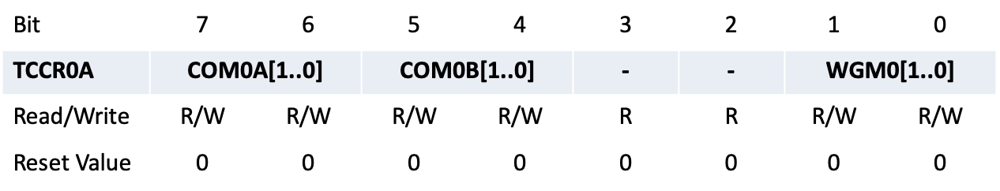] - .color-grey[COM0A[1..0]: *Compare Match Output A Mode* where 00 = Disconnect, 01 = Toggle on Match, 10 = Clear on Match, 11 = Set on Match] - COM0B[1..0]: *Compare Match Output B Mode* where 00 = Disconnect, 01 = Toggle on Match, 10 = Clear on Match, 11 = Set on Match - WGM0[1..0]: *Waveform Generation Mode* together with WGM02 in TCCR0B selects 000 = Normal, 001 = Phase Correct PWM with 0xFF as Top, 010 = Clear on Compare Match with OCR0A as Top, 011 = Fast PWM with 0xFF as Top, 101 = Phase Correct PWM with OCR0A as Top, 111 = Fast PWM with OCR0A as Top --- name: S37 # TCCR0B Register .center[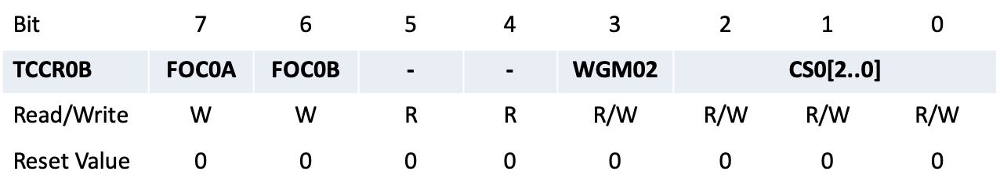] - .color-grey[FOC0A: *Force Output Compare A*] - .color-grey[FOC0B: *Force Output Compare B*] - WGM0[2]: *Waveform Generation Mode* with [WGM0[1..0]](#S18) - CS0[2..0]: *Clock Select* where 000 = None (i.e. Timer/Counter Stopped), 001 = I/O Clock, 010 = I/O Clock/8, 011 = I/O Clock/64, 100 = I/O Clock/256, 101 = I/O Clock/1024, 110 = External Clock on Falling Edge, 111 = External Clock on Rising Edge --- name: S38 # TCNTO Register .center[] - TCNT0[7..0]: *Timer/Counter Register* can be read to obtain the counter value but when writing the count value while the timer is running it can introduce the risk of missing compare matches --- name: S39 # OCR0A & OCR0B Registers .center[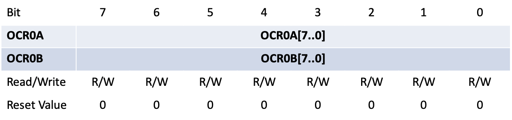] - OCR0A[7..0]: *Output Compare Register A* is either used as Top, or compared with TCNT0 and a match can be used to generate an interrupt or to generate a PWM waveform on the OC0A pin - OCR0B[7..0]: *Output Compare Register B* is compared with TCNT0 and a match can be used to generate an interrupt, or to generate a PWM waveform on the OC0B pin --- name: S40 # TIMSK0 Register .center[] - .color-grey[OCIE0B: *Output Compare Match B Interrupt Enable* executes corresponding interrupt when OCR0B match TCNT0] - .color-grey[OCIE0A: *Output Compare Match A Interrupt Enable* executes corresponding interrupt when OCR0A match TCNT0] - .color-grey[TOIE0: *Overflow Interrupt Enable* executes corresponding interrupt when TCNT0 overflows] --- name: S41 # TIFR0 Register .center[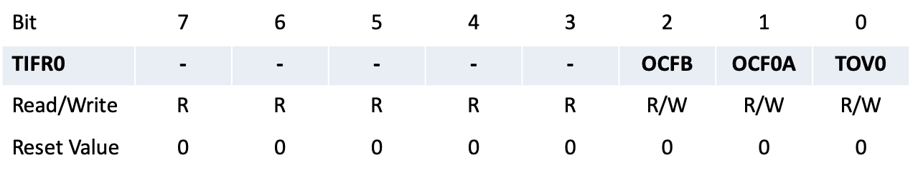] - .color-grey[OCF0B: *Output Compare Match B Flag* is set when OCR0B match TCNT0] - .color-grey[OCF0A: *Output Compare Match A Flag* is set when OCR0A match TCNT0] - .color-grey[TOV0: *Overflow Flag* is set when TCNT0 overflows] --- name: S42 # Fast PWM Mode with OCR0A as Top .center[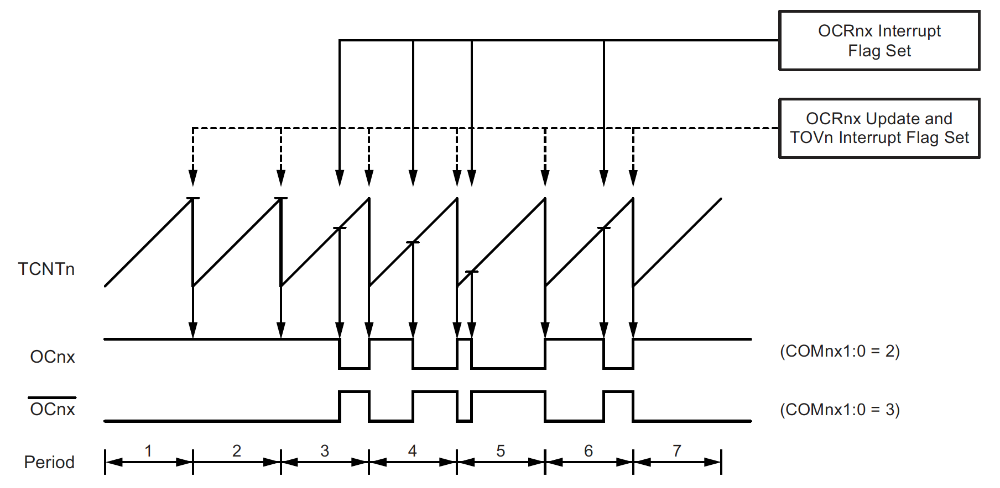] - Before using a timer we need to decide on what mode we want to use it in - In this lecture we are going to operate TC0 in *Fast PWM* mode with OCR0A as Top - In this mode, TCNT0 counts up starting from 0, where TCNT0 is incremented by 1 every timer clock cycle - TCNT0 value is compared with OCR0A value we will define and when they match, TCNT0 will be set to 0 - TOV0 flag will be set when a match occurs and is cleared either by writing a 1 or executing the corresponding interrupt --- name: S43 # Generating PWM Output .center[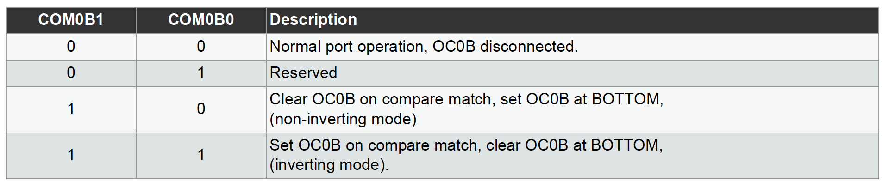] - When operated in the Fast PWM mode, TC0 peripheral support PWM waveform generation at the OC0A and/or OC0B pins - This is done using dedicated hardware and thus does not require firmware to set/clear digital I/O pins - Appropriate DDRD bits need to set to configure the OC0A (PD6) and/or OC0B (PD5) pins as outputs - When in Fast PWM Mode with OCR0A as Top, OC0B is available to generate a PWM output - In cases where both OCxA and OCxB are needed a different Timer peripheral maybe used - For standard PWM generation we need COM0B[1..0] set to 10 --- name: S25 # Configuring TC0 in CTC Mode - First we need to configure TC0 as per our needs - Need to set the bits of the [TCCR0A](#S18) and [TCCR0B](#S19) registers - Do this in an initialization function - In the lectures, as an example, we will configure the TC0 in CTC mode with a prescaler of 8 - We want the timer to have period of 1ms so we can create our own millisecond delay - Since the ATmega328P uses a 2MHz system clock, to achieve this we need to load 249 to OCR0A .codes[ ```c //This function configures TC0 to operate in CTC mode with a period of 1ms //The prescaler of 8 needed is not loaded to keep timer stopped until it is used void tc0_init(void){ TCCR0A = 0b00000010; //WGM0[2..0] should be set to 010 for CTC mode TCCR0B = 0b00000000; //Initialize CS0[2..0] to 000 so that timer is stopped until needed //When running we need to load 010 to CS0[2..0] for a prescaler of 8 OCR0A = 249; //Loading OCR0A with 249 to get a period of 1ms } ``` ] --- class: title-slide layout: false count: false .logo-title[] # Questions?